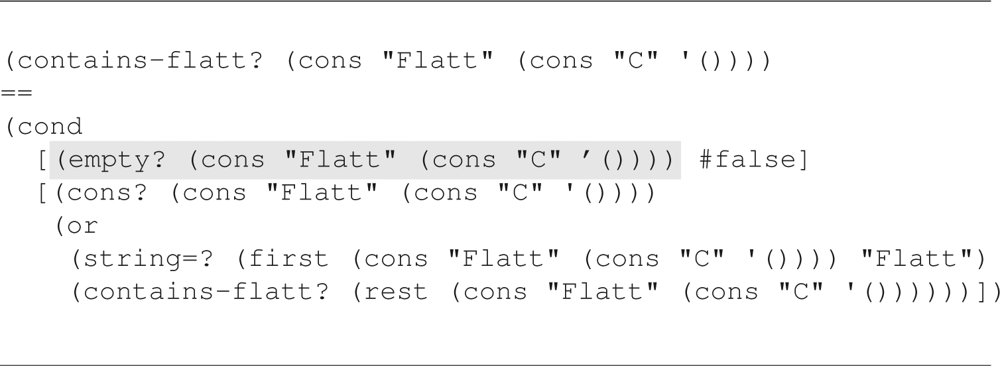
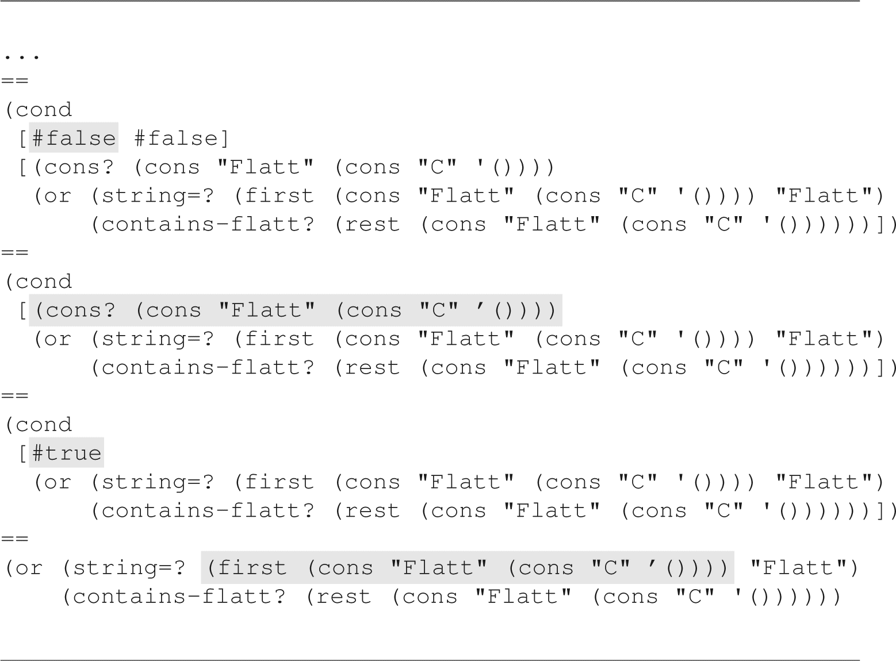
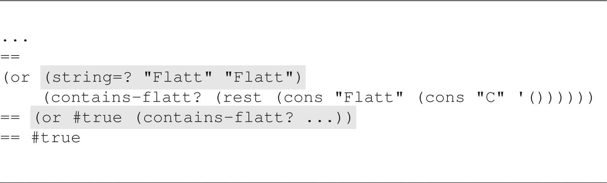

8.4 Computing with Lists
Since we are still using BSL, the rules of algebra—see intermezzo 1—tell us how to determine the value of expressions such as
(contains-flatt? (cons "Flatt" (cons "C" '())))
without DrRacket. Programmers must have an intuitive understanding of how this kind of calculation works, so we step through the one for this simple example.
Figure 48 displays the first step, which uses the usual substitution rule to determine the value of an application. The result is a conditional expression because, as an algebra teacher would say, the function is defined in a step-wise fashion.

Figure 48: Computing with lists, step 1
The calculation is continued in figure 49. To find the correct clause of the cond expression, we must determine the value of the conditions, one by one. Since a consed list isn’t empty, the first condition’s result is #false, and we therefore eliminate the first cond clause. Finally the condition in the second clause evaluates to #true because cons? of a consed list holds.

Figure 49: Computing with lists, step 2
From here, it is just three more steps of arithmetic to get the final result. Figure 50 displays the three steps. The first evaluates (first (cons "Flatt"…)) to "Flatt" due to the laws for first. The second discovers that "Flatt" is a string and equal to "Flatt". The third says (or #true X) is #true regardless of what X is.

Figure 50: Computing with lists, step 3
Exercise 135. Use DrRacket’s stepper to check the calculation for
(contains-flatt? (cons "Flatt" (cons "C" '())))
Also use the stepper to determine the value of
(contains-flatt?
(cons "A" (cons "Flatt" (cons "C" '()))))
What happens when "Flatt" is replaced with "B"? 
Exercise 136. Validate with DrRacket’s stepper
(our-first (our-cons "a" '())) == "a"
(our-rest (our-cons "a" '())) == '()
See chapter 8.2 for the definitions of these functions.